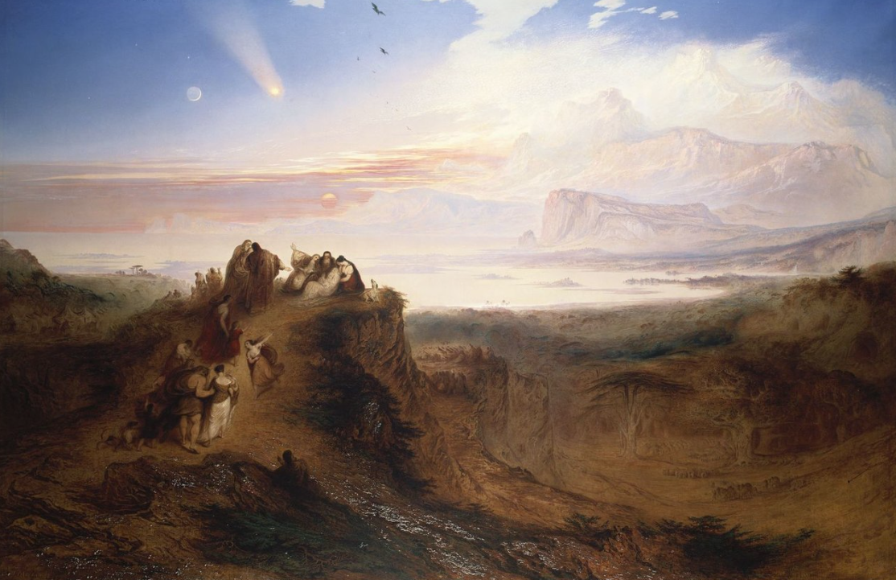
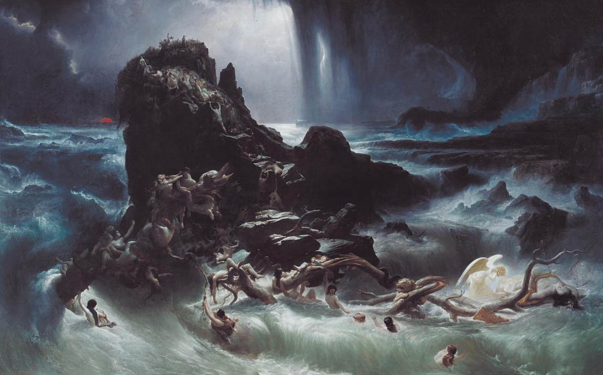
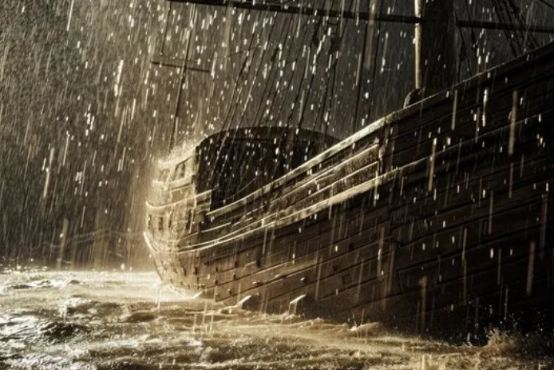

"Truth is the beginning of knowledge" -Aristotle
Flood myths are among the most enduring narratives in human history, found in ancient texts and oral traditions spanning continents and cultures. From The Epic of Gilgamesh in ancient Mesopotamia to the story of Noah’s Ark in the Bible, these tales share a striking number of similarities: a divine warning, a hero who builds an ark, and a cataclysmic flood that wipes out much of life on Earth. Such parallels raise the question: Could these disparate accounts be rooted in a shared historical event?
One of the earliest recorded flood myths, The Epic of Gilgamesh, tells the story of Utnapishtim, who was warned by the gods of an impending deluge intended to cleanse humanity. In preparation, Utnapishtim builds a large boat to save his family, livestock, and the seeds of all living things. Similarly, the biblical account of Noah describes a man chosen by God to survive a divine flood and preserve life on Earth. These stories, along with similar narratives from cultures as diverse as the ancient Greeks, Chinese, and indigenous tribes in the Americas, suggest a widespread cultural memory of a devastating flood.
Some researchers speculate that these myths could have been inspired by real geological events. The Younger Dryas Impact Hypothesis offers a possible explanation, proposing that around 12,800 years ago, a comet or meteor impact triggered rapid environmental changes, including massive flooding. This hypothesis is supported by evidence of sudden climatic shifts and signs of widespread wildfires, suggesting a cataclysm that might have profoundly impacted early human societies.
The archaeological evidence, including sediment layers and microtektites found in North America and beyond, suggests a series of events that could plausibly align with the timeline of these ancient myths. If true, this theory offers a tantalizing possibility: the Great Flood myths may be more than just allegory, pointing instead to a real event that left an indelible mark on the collective human psyche.
Thanks for taking the time to read this and any thoughts or feedback can be submitted at thee33xp@proton.me